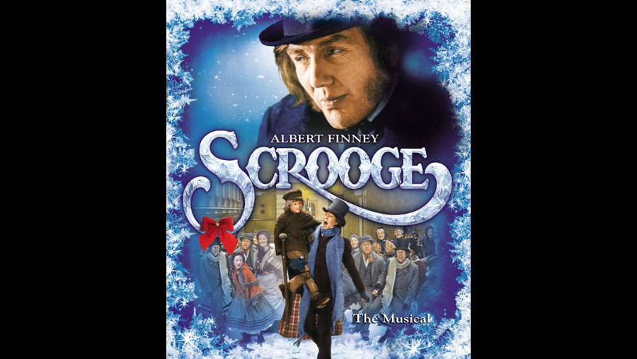

1970

CAST
Ebenezer Scrooge
-
Albert Finney
Bob Cratchit
-
David Collings
Mrs. Cratchit
-
Frances Cuka
Tiny Tim Cratchit
-
Richard Beaumont
"Harry", (Fred, Scrooge's nephew)
-
Michael Medwin
"Harry's" wife
-
Mary Peach
Tom, "Harry's" friend
-
Gordon Jackson
Tom Jenkins
-
Anton Rodgers
Isabel
-
Suzanne Neve
Marley's Ghost
-
Alec Guinness
Spirit of Christmas Past
-
Edith Evans
Spirit of Christmas Present
-
Kenneth More
Spirit of Christmas Future
-
Paddy Stone
Charity Gentleman
-
Derek Francis
Charity Gentleman
-
Roy Kinnear
Mr. Fezziwig
-
Laurence Naismith
Mrs. Fezziwig
-
Kay Walsh
Pringle, the toyshop owner
-
Geoffrey Bayldon
Woman Debtor
-
Molly Weir
Woman Debtor
-
Helena Gloag
Miller, the puppeteer
-
Reg Lever
Well-Wisher
-
Keith Marsh
Party Guest
-
Marianne Stone
CREATIVE TEAM
Director
-
Ronald Neame
Screenplay and Music
-
Leslie Bricusse
PRODUCTION
A 1970 British musical film adaptation in Panavision. It was filmed in London between January and May 1970, directed by Ronald Neame, and starred Albert Finney as Ebenezer Scrooge. The film's score was composed by Leslie Bricusse and arranged and conducted by Ian Fraser. With eleven musical arrangements interspersed throughout, the award-winning motion picture is a faithful musical retelling of the original.
Albert Finney won the Golden Globe Award for Best Actor in a Musical/Comedy in 1971. The film received four Academy Award nominations, including for Best Original Song for "Thank You Very Much".